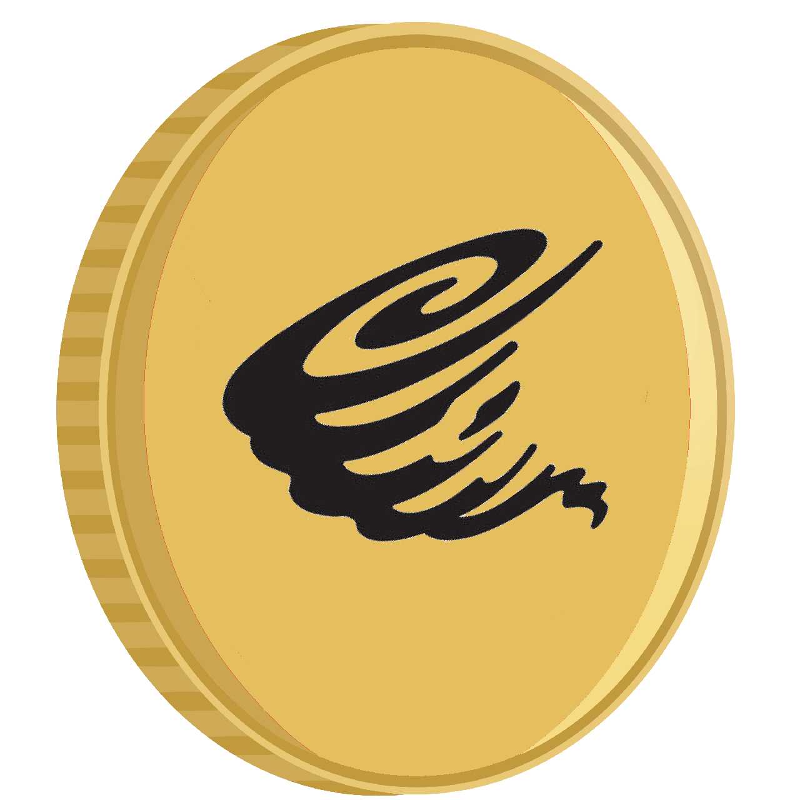
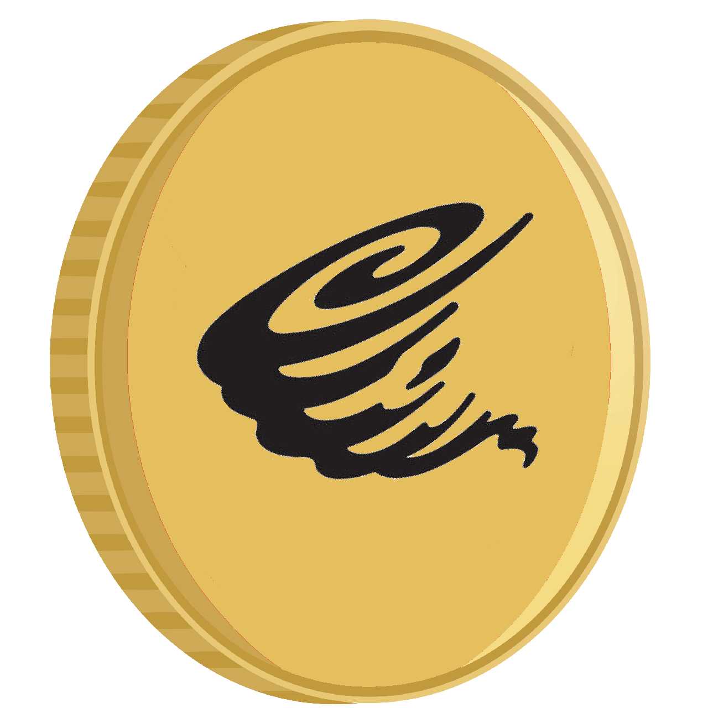

Q1
In progress - 10 May 2021
Start of development, implementation of main tools.


TornadoSwap ($TORN) is a new blockchain project on the Binance Smart Chain. Yield Farming on Binance Smart Chain Yield Farm & Algorithmic Stablecoin Protocol & AMM on #BSC.
 


TornadoSwap is a brand new DeFi project designed by an experienced development team as the 3rd generation deflationary yield farm & AMM on #BSC. Besides the buyback burning mechanism introduced by Goose Finance, we have implemented some unique innovative features on TornadoSwap’s yield farm to fight against the inflation problem faced by most traditional yield farms and even Goose Finance.
Unlike other deflationary yield farms, we don't plan to develop layered farming after launch. Because we think it doesn't make much sense to keep issuing new tokens by layered farming. Kindly remind, please always Do Your Own Research! Only Invest what you can afford to lose.
$TORN no longer has infinite inflation - Hard cap of 250M tokens.
A hard cap of 250M has been approved - but there are not yet contractual changes in place to create this hard cap.
Right now, the plan is to have 2/3rds of $TORN earned go into a lockup address and be later distributed to the LPs who earned it from the farm.
Yes of course.
New TornadoSwap is created at 100 Tornado per block for tokens that are staked in the farms.
This is an overview of what features are currently being worked on and when you can expect them to be deployed. We put an emphasis on core improvements and product updates; planned listings on various platforms will not be included, as we believe that these should come organically as the project grows in scope and adoption.
Start of development, implementation of main tools.
Launch of the app website, development of the lottery, recruitments.
End of development, start of presale. +Airdrop whitelist
Launch of the native token, lottery, 24 hours later the farm pools will be open.
Partnerships with other bsc tokens, APR increases